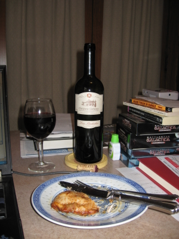

|
Asia >
Lebanon >
Bekaa Valley >
Château Kefraya >
Les Bretèches

2006 Les Bretèches Bekaa Valley
Château Kefraya
Lebanon
A blend of 70% Cinsault, 5% Syrah, 5% Cabernet Sauvignon, 5% Tempranillo, 5% Carignan, 5% Grenache and 5% Mourvèdre grown at an altitude of
1000 meters and picked by hand.
Price: $11
13.5% alcohol
750 ml

2009 tasting - A dark red, this blend has a dry, oaky bouquet coupled to a light, complex flavor and a tart, chewy finish.
One can almost taste the heat of the region in the glass.
More about
Cinsault,
Syrah,
Cabernet Sauvignon,
Tempranillo,
Carignan,
Grenache and
Mourvèdre.
|
|